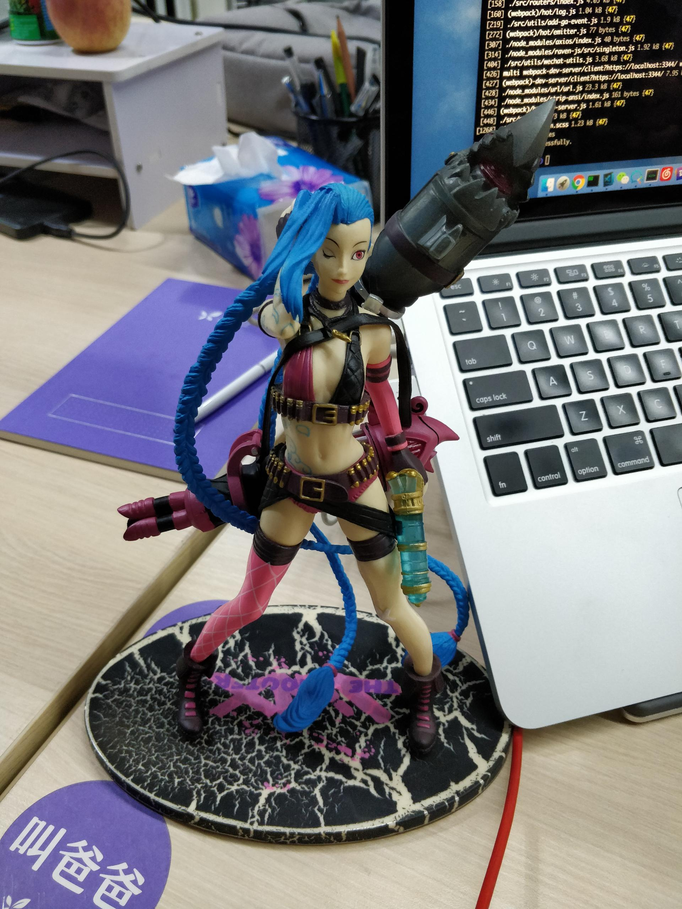
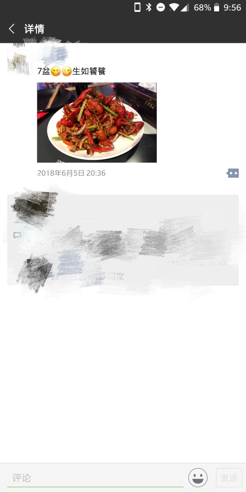

<!DOCTYPE html>


  


<html class="theme-next pisces use-motion" lang="zh-CN">
<head>
  <meta charset="UTF-8"/>
<meta http-equiv="X-UA-Compatible" content="IE=edge" />
<meta name="viewport" content="width=device-width, initial-scale=1, maximum-scale=2"/>
<meta name="theme-color" content="#222">


<meta http-equiv="Cache-Control" content="no-transform" />
<meta http-equiv="Cache-Control" content="no-siteapp" />


<link href="/lib/font-awesome/css/font-awesome.min.css?v=4.6.2" rel="stylesheet" type="text/css" />

<link href="/css/main.css?v=6.0.6" rel="stylesheet" type="text/css" />


  <link rel="apple-touch-icon" sizes="180x180" href="/favicon.ico?v=6.0.6">


  <link rel="icon" type="image/png" sizes="32x32" href="/favicon.ico?v=6.0.6">


  <link rel="icon" type="image/png" sizes="16x16" href="/favicon.ico?v=6.0.6">


  <link rel="mask-icon" href="/favicon.ico?v=6.0.6" color="#222">


<script type="text/javascript" id="hexo.configurations">
  var NexT = window.NexT || {};
  var CONFIG = {
    root: '/',
    scheme: 'Pisces',
    version: '6.0.6',
    sidebar: {"position":"left","display":"post","offset":12,"b2t":false,"scrollpercent":false,"onmobile":false},
    fancybox: false,
    fastclick: false,
    lazyload: false,
    tabs: true,
    motion: {"enable":true,"async":false,"transition":{"post_block":"fadeIn","post_header":"slideDownIn","post_body":"slideDownIn","coll_header":"slideLeftIn","sidebar":"slideUpIn"}},
    algolia: {
      applicationID: 'RU6IFL6YOS',
      apiKey: '59ab260b4dc669a506fbca973aca1231',
      indexName: 'lizhiyao.github.io',
      hits: {"per_page":10},
      labels: {"input_placeholder":"Search for Posts","hits_empty":"We didn't find any results for the search: ${query}","hits_stats":"${hits} results found in ${time} ms"}
    }
  };
</script>


  


  <meta name="description" content="最近一直想写一些关于丁香医生前端团队的文字，却始终觉得难以动笔。去描述一个团队，可以从非常多的维度去阐述，当从某个视角去深入描写时，就会觉得很难把控描写的尺度，要么有些溺爱，要么有些苛刻，亦或者不够直接坦率。内心挣扎一段时间后，终于决定只从一个维度来写，那就是我眼中丁香医生前端团队的样子，也是面试过程中会告知面试者的一些关于团队的信息。 这是一个目前由 7 人组成的前端团队，负责维护丁香医生微信小">
<meta name="keywords" content="随笔">
<meta property="og:type" content="article">
<meta property="og:title" content="请问丁香医生前端团队怎么样？">
<meta property="og:url" content="http://lizhiyao.github.io/2018/06/26/you-do-not-know-the-front-end-team-of-dxy-doctor/index.html">
<meta property="og:site_name" content="丁香园记">
<meta property="og:description" content="最近一直想写一些关于丁香医生前端团队的文字，却始终觉得难以动笔。去描述一个团队，可以从非常多的维度去阐述，当从某个视角去深入描写时，就会觉得很难把控描写的尺度，要么有些溺爱，要么有些苛刻，亦或者不够直接坦率。内心挣扎一段时间后，终于决定只从一个维度来写，那就是我眼中丁香医生前端团队的样子，也是面试过程中会告知面试者的一些关于团队的信息。 这是一个目前由 7 人组成的前端团队，负责维护丁香医生微信小">
<meta property="og:locale" content="zh-CN">
<meta property="og:image" content="http://lizhiyao.github.io/2018/06/26/you-do-not-know-the-front-end-team-of-dxy-doctor/WechatIMG652.jpeg">
<meta property="og:image" content="http://lizhiyao.github.io/2018/06/26/you-do-not-know-the-front-end-team-of-dxy-doctor/WechatIMG653.jpeg">
<meta property="og:image" content="http://lizhiyao.github.io/2018/06/26/you-do-not-know-the-front-end-team-of-dxy-doctor/WechatIMG654.jpeg">
<meta property="og:updated_time" content="2018-09-11T14:29:26.423Z">
<meta name="twitter:card" content="summary">
<meta name="twitter:title" content="请问丁香医生前端团队怎么样？">
<meta name="twitter:description" content="最近一直想写一些关于丁香医生前端团队的文字，却始终觉得难以动笔。去描述一个团队，可以从非常多的维度去阐述，当从某个视角去深入描写时，就会觉得很难把控描写的尺度，要么有些溺爱，要么有些苛刻，亦或者不够直接坦率。内心挣扎一段时间后，终于决定只从一个维度来写，那就是我眼中丁香医生前端团队的样子，也是面试过程中会告知面试者的一些关于团队的信息。 这是一个目前由 7 人组成的前端团队，负责维护丁香医生微信小">
<meta name="twitter:image" content="http://lizhiyao.github.io/2018/06/26/you-do-not-know-the-front-end-team-of-dxy-doctor/WechatIMG652.jpeg">


  <link rel="canonical" href="http://lizhiyao.github.io/2018/06/26/you-do-not-know-the-front-end-team-of-dxy-doctor/"/>


<script type="text/javascript" id="page.configurations">
  CONFIG.page = {
    sidebar: "",
  };
</script>

  <title>请问丁香医生前端团队怎么样？ | 丁香园记</title>
  


<script async src="https://www.googletagmanager.com/gtag/js?id=UA-96917833-1"></script>
<script>
  window.dataLayer = window.dataLayer || [];
  function gtag(){dataLayer.push(arguments);}
  gtag('js', new Date());

  gtag('config', 'UA-96917833-1');
</script>


  <script type="text/javascript">
    var _hmt = _hmt || [];
    (function() {
      var hm = document.createElement("script");
      hm.src = "https://hm.baidu.com/hm.js?5476bfd46e559a87ee9508b21a534eb9";
      var s = document.getElementsByTagName("script")[0];
      s.parentNode.insertBefore(hm, s);
    })();
  </script>


  <noscript>
  <style type="text/css">
    .use-motion .motion-element,
    .use-motion .brand,
    .use-motion .menu-item,
    .sidebar-inner,
    .use-motion .post-block,
    .use-motion .pagination,
    .use-motion .comments,
    .use-motion .post-header,
    .use-motion .post-body,
    .use-motion .collection-title { opacity: initial; }

    .use-motion .logo,
    .use-motion .site-title,
    .use-motion .site-subtitle {
      opacity: initial;
      top: initial;
    }

    .use-motion {
      .logo-line-before i { left: initial; }
      .logo-line-after i { right: initial; }
    }
  </style>
</noscript>

</head>

<body itemscope itemtype="http://schema.org/WebPage" lang="zh-CN">

  
  
    
  

  <div class="container sidebar-position-left page-post-detail">
    <div class="headband"></div>

    <header id="header" class="header" itemscope itemtype="http://schema.org/WPHeader">
      <div class="header-inner"> 

<div class="site-brand-wrapper">
  <div class="site-meta ">
    

    <div class="custom-logo-site-title">
      <a href="/" class="brand" rel="start">
        <span class="logo-line-before"><i></i></span>
        <span class="site-title">丁香园记</span>
        <span class="logo-line-after"><i></i></span>
      </a>
    </div>
      
        <h1 class="site-subtitle" itemprop="description"></h1>
      
  </div>

  <div class="site-nav-toggle">
    <button aria-label="切换导航栏">
      <span class="btn-bar"></span>
      <span class="btn-bar"></span>
      <span class="btn-bar"></span>
    </button>
  </div>
</div>

<nav class="site-nav">
  

  
    <ul id="menu" class="menu">
      
        
        
          
  <li class="menu-item menu-item-home">
    <a href="/" rel="section">
      <i class="menu-item-icon fa fa-fw fa-home"></i> <br />首页</a>
</li>

      
        
        
          
  <li class="menu-item menu-item-tags">
    <a href="/tags/" rel="section">
      <i class="menu-item-icon fa fa-fw fa-tags"></i> <br />标签</a>
</li>

      
        
        
          
  <li class="menu-item menu-item-archives">
    <a href="/archives/" rel="section">
      <i class="menu-item-icon fa fa-fw fa-archive"></i> <br />归档</a>
</li>

      
        
        
          
  <li class="menu-item menu-item-about">
    <a href="/about/" rel="section">
      <i class="menu-item-icon fa fa-fw fa-user"></i> <br />关于</a>
</li>

      
        
        
          
  <li class="menu-item menu-item-resume">
    <a href="/resume/" rel="section">
      <i class="menu-item-icon fa fa-fw fa-file"></i> <br />简历</a>
</li>

      

      
        <li class="menu-item menu-item-search">
          
            <a href="javascript:;" class="popup-trigger">
          
            
              <i class="menu-item-icon fa fa-search fa-fw"></i> <br />搜索</a>
        </li>
      
    </ul>
  

  

  
    <div class="site-search">
      
  
  <div class="algolia-popup popup search-popup">
    <div class="algolia-search">
      <div class="algolia-search-input-icon">
        <i class="fa fa-search"></i>
      </div>
      <div class="algolia-search-input" id="algolia-search-input"></div>
    </div>

    <div class="algolia-results">
      <div id="algolia-stats"></div>
      <div id="algolia-hits"></div>
      <div id="algolia-pagination" class="algolia-pagination"></div>
    </div>

    <span class="popup-btn-close">
      <i class="fa fa-times-circle"></i>
    </span>
  </div>


    </div>
  
</nav>


  


 </div>
    </header>

    
  
  
  
    
      
    
    <a href="https://github.com/lizhiyao" class="github-corner" target="_blank" title="Follow me on GitHub" aria-label="Follow me on GitHub"><svg width="80" height="80" viewBox="0 0 250 250" style="fill:#222; color:#fff; position: absolute; top: 0; border: 0; right: 0;" aria-hidden="true"><path d="M0,0 L115,115 L130,115 L142,142 L250,250 L250,0 Z"></path><path d="M128.3,109.0 C113.8,99.7 119.0,89.6 119.0,89.6 C122.0,82.7 120.5,78.6 120.5,78.6 C119.2,72.0 123.4,76.3 123.4,76.3 C127.3,80.9 125.5,87.3 125.5,87.3 C122.9,97.6 130.6,101.9 134.4,103.2" fill="currentColor" style="transform-origin: 130px 106px;" class="octo-arm"></path><path d="M115.0,115.0 C114.9,115.1 118.7,116.5 119.8,115.4 L133.7,101.6 C136.9,99.2 139.9,98.4 142.2,98.6 C133.8,88.0 127.5,74.4 143.8,58.0 C148.5,53.4 154.0,51.2 159.7,51.0 C160.3,49.4 163.2,43.6 171.4,40.1 C171.4,40.1 176.1,42.5 178.8,56.2 C183.1,58.6 187.2,61.8 190.9,65.4 C194.5,69.0 197.7,73.2 200.1,77.6 C213.8,80.2 216.3,84.9 216.3,84.9 C212.7,93.1 206.9,96.0 205.4,96.6 C205.1,102.4 203.0,107.8 198.3,112.5 C181.9,128.9 168.3,122.5 157.7,114.1 C157.9,116.9 156.7,120.9 152.7,124.9 L141.0,136.5 C139.8,137.7 141.6,141.9 141.8,141.8 Z" fill="currentColor" class="octo-body"></path></svg>
    
      </a>
    


    <main id="main" class="main">
      <div class="main-inner">
        <div class="content-wrap">
          
            

          
          <div id="content" class="content">
            

  <div id="posts" class="posts-expand">
    

  

  
  
  

  

  <article class="post post-type-normal" itemscope itemtype="http://schema.org/Article">
  
  
  
  <div class="post-block">
    <link itemprop="mainEntityOfPage" href="http://lizhiyao.github.io/2018/06/26/you-do-not-know-the-front-end-team-of-dxy-doctor/">

    <span hidden itemprop="author" itemscope itemtype="http://schema.org/Person">
      <meta itemprop="name" content="志遥">
      <meta itemprop="description" content="">
      <meta itemprop="image" content="/uploads/avatar.jpg">
    </span>

    <span hidden itemprop="publisher" itemscope itemtype="http://schema.org/Organization">
      <meta itemprop="name" content="丁香园记">
    </span>

    
      <header class="post-header">

        
        
          <h2 class="post-title" itemprop="name headline">请问丁香医生前端团队怎么样？</h2>
        

        <div class="post-meta">
          <span class="post-time">
            
              <span class="post-meta-item-icon">
                <i class="fa fa-calendar-o"></i>
              </span>
              
                <span class="post-meta-item-text">发表于</span>
              
              <time title="创建于" itemprop="dateCreated datePublished" datetime="2018-06-26T20:34:10+08:00">2018-06-26</time>
            

            
            

            
          </span>

          

          
            
              <span class="post-comments-count">
                <span class="post-meta-divider">|</span>
                <span class="post-meta-item-icon">
                  <i class="fa fa-comment-o"></i>
                </span>
                <a href="/2018/06/26/you-do-not-know-the-front-end-team-of-dxy-doctor/#comments" itemprop="discussionUrl">
                  <span class="post-meta-item-text">评论：</span> <span class="post-comments-count gitment-comments-count" data-xid="/2018/06/26/you-do-not-know-the-front-end-team-of-dxy-doctor/" itemprop="commentsCount"></span>
                </a>
              </span>
            
          

          
          
             <span id="/2018/06/26/you-do-not-know-the-front-end-team-of-dxy-doctor/" class="leancloud_visitors" data-flag-title="请问丁香医生前端团队怎么样？">
               <span class="post-meta-divider">|</span>
               <span class="post-meta-item-icon">
                 <i class="fa fa-eye"></i>
               </span>
               
                 <span class="post-meta-item-text">阅读次数：</span>
               
                 <span class="leancloud-visitors-count"></span>
             </span>
          

          

          

          

        </div>
      </header>
    

    
    
    
    <div class="post-body" itemprop="articleBody">

      
      

      
        <p>最近一直想写一些关于丁香医生前端团队的文字，却始终觉得难以动笔。去描述一个团队，可以从非常多的维度去阐述，当从某个视角去深入描写时，就会觉得很难把控描写的尺度，要么有些溺爱，要么有些苛刻，亦或者不够直接坦率。内心挣扎一段时间后，终于决定只从一个维度来写，那就是我眼中丁香医生前端团队的样子，也是面试过程中会告知面试者的一些关于团队的信息。</p>
<p>这是一个目前由 7 人组成的前端团队，负责维护丁香医生微信小程序、丁香医生医生端微信小程序、基于 Vue.js 全家桶的<a href="https://ask.dxy.com/ama/index" target="_blank" rel="noopener">丁香医生 SPA</a> 和丁香医生管理后台、基于 React 全家桶的丁香医生数据统计管理后台，基于 React SSR 的<a href="https://dxy.com/" target="_blank" rel="noopener">丁香医生官网</a>和<a href="https://m.dxy.com/" target="_blank" rel="noopener">丁香医生移动站</a>。在丁香医生 APP 中，我们负责基于 JSBridge 和 Vue.js 的一些页面开发（移动端的伙伴在个别页面使用了 RN）。我们在小程序迭代过程中，和设计师一起沉淀出了移动端的组件库。此外，还会去做一些有趣的项目，比如：内部数据可视化项目（我们称它为 Huston）。</p>
<p>前端同学日常工作中会和服务端同学、客户端同学、测试同学、产品经理、交互设计师和 UI 设计师紧密配合。目前使用 Teambition 作为基础的协作工具。需求通常会经过需求评审、排期、开发、提测、验收、发布几个主要阶段。前端团队内部以主动认领的方式领取自己想做的需求。项目的版本控制使用 Git，项目代码会统一托管在内网的 GitLab 上。内网中有私有 npm 仓库、公司统一的前端资源发布系统、公司统一使用的接口 Mock 和管理工具 Api Mocker 等服务。</p>
<p>一个技术团队安身立命的根本，是有着过硬的技术实力。如果这个队伍想走得远，最好能有足够具有挑战性的业务场景（需求场景）来历练。目前丁香医生前端团队用了一年的时间，让自己有了良好的的前端技术栈，接下来我们的重心会是深入掌握技术。随着丁香医生业务的快速成长，我们也会去思考、去努力让技术和业务更好的结合。</p>
<p>在丁香医生前端团队，我们会追寻五个词：快乐、优质、高效、成长、自由（这五个词有先后顺序）。下面是我们对这5个词的简单理解：</p>
<ul>
<li>快乐。快乐是整个团队文化的基石。我们会认为快乐是人生的主题。每个人都应该是以快乐的状态去工作。如果做某件事情不开心，一定要及时和团队沟通。</li>
<li>优质、高效。高质量的交付和高效率的开发，是每个技术人员应该追求的。</li>
<li>成长。每个成员在工作过程中都应该是有进步的。今天的自己应该比昨日的自己有进步。</li>
<li>自由。在按照公司规章制度按时保质完成工作的前提下，每个成员应该有足够的自由，让其肆意成长。</li>
</ul>
<p>写出来并不是说我们做的有多好，而是会一直朝着这个方向去做事情。</p>
<p>公司目前大概有 50 人左右的前端工程师，分成不同的小组支持不同的业务线。基本上每周丁香园的前端团队都会有技术分享，每个给大家做分享的伙伴会收到一份精美的礼物，比如一份手办。</p>
<p></p>
<p>17 年丁香园前端团队举办了第一届前端技术沙龙，和大搜车一起举办了第五期杭州 Node Party。</p>
<ul>
<li><a href="https://zhuanlan.zhihu.com/p/29731550" target="_blank" rel="noopener">第一届丁香园前端技术沙龙</a></li>
<li><a href="https://juejin.im/post/5a1bc55351882533d022c963" target="_blank" rel="noopener">第五期杭州 Node Party 小记</a></li>
</ul>
<p>此外，还有一些应该是大多数互联网公司都会提供的。比如：给前端同学配备一台 Mac Pro、两台 Dell 显示器；每个月的团建；每年免费去参加 Qcon、GMTC 等技术大会的机会；采购想看的图书等。</p>
<p>前端小伙伴的工作台通常是这样的：</p>
<p></p>
<p>团建聚餐后，小哥哥发了一条朋友圈：</p>
<p></p>
<h1 id="团队所在部门是一个怎样的部门？"><a href="#团队所在部门是一个怎样的部门？" class="headerlink" title="团队所在部门是一个怎样的部门？"></a>团队所在部门是一个怎样的部门？</h1><p>公司有非常多的产品线。按照用户群体可以分为 toB、toD（面向医生）、toH（面向医院）、toC（面向大众）等方向。丁香医生业务部目前是一个 toC 方向的一级部门。</p>
<p>这是一个年轻充满活力和干劲的团队。</p>
<p>部门下午经常会发奶茶或者水果的车，上车的同学可以免费有一点点、星巴克或者新鲜的水果吃。</p>
<h1 id="公司的环境如何？"><a href="#公司的环境如何？" class="headerlink" title="公司的环境如何？"></a>公司的环境如何？</h1><p>公司总部的位置在杭州市滨江区的上峰电商产业园 3 号楼。</p>
<p>公司有各种各样的兴趣社团，比如：篮球小分队（丁香医生前端团队有一名国家级裁判员）、足球小分队、羽毛球小分队、跳蚤小分队、街舞小分队（小分队的队长就在丁香医生前端团队）、弹唱小分队（丁香医生前端团队有一个江湖称上峰林俊杰的小哥哥）、喝酒小分队（分队创始人之一就在丁香医生技术团队）、吸猫小分队等。</p>
<p>公司有健身房，经常可以看到在健身的帅哥靓女们。他们的身材和气质是真的很好（丁香医生抖音号了解一下）。</p>
<p>公司餐吧常年有咖啡等饮品，夏季和秋季会有冷饮。</p>
<h1 id="说点别的"><a href="#说点别的" class="headerlink" title="说点别的"></a>说点别的</h1><p>上面描述的信息，对于大多数人来说可能是重要的，这些信息会辅助他做决策。</p>
<p>在我的眼中，有比上面这些更重要的事情：一个人想清楚自己到底想去做什么，想清楚后能遇到志同道合的人一起去朝着心中那个方向去做。工作中能遇到配合起来可以在内心深处可以产生共鸣的人，是一件幸运的事情。在想清楚最核心的问题后，上面描述的信息才会变得更有价值。</p>
<p>在加入丁香园之前，我经历过两家不同阶段的创业公司，每家公司介绍中都会有一些名词，比如：硅谷、海归、微软、（14年左右的）手游行业、O2O（还记得几年前创业大潮中死掉的那些贴着 O2O 标签的公司吗？），还和朋友一起注册过两家公司（注册公司就会经历股权分配、股权变更等从0到1的过程），这些经历会让我对公司这个词有更清晰的认识以及对公司存在的问题的容忍度变得更大。《安娜卡列尼娜》中会说“幸福的家庭都是相似的 不幸的家庭各有各的不幸”，实际上对于公司来说也是一样的，每家公司都有它的优势和不足。一个人加入或者离开一家公司，是两者在各自成长阶段从合适变得不合适的过程。</p>
<p>说了这么多，是时候亮出丁香医生前端团队招聘的 JD 了。是的，随着丁香医生业务的快速增长，我们前端团队需要优秀的同学加入，来一起做些有趣、有挑战的事情。</p>
<hr>
<h3 id="职位描述"><a href="#职位描述" class="headerlink" title="职位描述"></a>职位描述</h3><ul>
<li>负责丁香医生旗下产品的前端开发工作（网站，Web App，Hybrid App，微信小程序，管理后台，Node.js 中间层）；</li>
<li>依据产品的设计需求，优质高效的完成产品前端的开发和维护；</li>
<li>对产品的前端性能进行优化，确保产品具有优质的用户体验；</li>
<li>参与丁香园前端团队的基础平台建设；</li>
</ul>
<h3 id="任职条件"><a href="#任职条件" class="headerlink" title="任职条件"></a>任职条件</h3><ul>
<li>3年以上前端工作经验；</li>
<li>熟练使用 HTML（HTML5）、CSS（CSS3）和 JavaScript（ES6/ES7）；</li>
<li>熟悉网络协议（HTTP/HTTPS等）；</li>
<li>熟练使用 Webpack 或者 rollupjs；</li>
<li>对前端开发规范化、工程化、组件化、测试有一定的认识和实践；</li>
<li>理解并熟练使用面向对象编程思想，注重设计模式、模块化开发在实际项目中的应用；</li>
<li>至少熟练使用 Vue.js、React.js、AngularJS 三种框架中的一种；</li>
<li>较强的责任心，良好的沟通能力和文档编写能力；</li>
</ul>
<h3 id="优先条件"><a href="#优先条件" class="headerlink" title="优先条件"></a>优先条件</h3><ul>
<li>在简历里写明 Github 账号或个人博客地址；</li>
<li>独立开发过或者参与过优质的开源项目；</li>
<li>有实际 Hybrid App 项目开发经验；</li>
<li>高负载场景下 NodeJS 应用开发和运维经验；</li>
<li>熟练使用 TypeScript；</li>
<li>熟练使用一种 CSS 预处理器（如：Less、Sass、Stylus）；</li>
<li>熟悉使用一门非前端的编程语言（如：Java、PHP、Python、Go）；</li>
</ul>
<hr>
<p>招聘 JD 写的比较正式，简单来说就是希望新加入的同学可以轻松 hold 住上面提到的各种类型的项目（因为团队现在的小伙伴们，每个人都可以做到这一点）。如果能在某些方面有深入的掌握，这会是加分项（最近团队有一个小伙伴在看 Vue.js 的源码，欢迎来一起交流）。在做事情方面，踏实可靠肯付出是基石，良好的事情推进能力和沟通表达能力是加分项。</p>
<p>实际上，一个优秀的前端工程师，可选的工作机会有很多。如果看到这篇文字的你正在找工作，或者正在考虑换一个工作环境，欢迎来找我聊一下。如果觉得丁香医生前端团队的岗位不合适，丁香园还有其他的前端岗位供你选择。如果还是不能满足求职需求，我可以让在阿里、网易的朋友帮你内推一下，也可以把你的简历给到有赞、大搜车等公司的技术负责人。在最近连续拿了几轮融资的宋小菜带团队的 Scott 也在招人，他们 RN 和 GraphQL 玩的多一些，想去的话也可以帮忙引荐。</p>
<p>既然已经看到这里了，不如发一封邮件我们聊一下吧：<a href="mailto:lizy@dxy.cn" target="_blank" rel="noopener">lizy@dxy.cn</a>。</p>

      
    </div>

    

    
    
    

    
      <div>
        <div id="wechat_subscriber" style="display: block; padding: 10px 0; margin: 20px auto; width: 100%; text-align: center">
    
    <div>微信扫一扫，我在丁香园记公众号等你</div>
</div>

      </div>
    

    

    

    <footer class="post-footer">
      
        <div class="post-tags">
          
            <a href="/tags/随笔/" rel="tag"># 随笔</a>
          
        </div>
      

      
      
      

      
        <div class="post-nav">
          <div class="post-nav-next post-nav-item">
            
              <a href="/2018/06/26/front-end-engineers-growth/" rel="next" title="前端工程师的成长之路">
                <i class="fa fa-chevron-left"></i> 前端工程师的成长之路
              </a>
            
          </div>

          <span class="post-nav-divider"></span>

          <div class="post-nav-prev post-nav-item">
            
              <a href="/2018/09/11/code-review/" rel="prev" title="Code Review 在丁香医生前端团队的实践">
                Code Review 在丁香医生前端团队的实践 <i class="fa fa-chevron-right"></i>
              </a>
            
          </div>
        </div>
      

      
      
    </footer>
  </div>
  
  
  
  </article>


    <div class="post-spread">
      
        
  <div class="bdsharebuttonbox">
    <a href="#" class="bds_tsina" data-cmd="tsina" title="分享到新浪微博"></a>
    <a href="#" class="bds_douban" data-cmd="douban" title="分享到豆瓣网"></a>
    <a href="#" class="bds_sqq" data-cmd="sqq" title="分享到QQ好友"></a>
    <a href="#" class="bds_qzone" data-cmd="qzone" title="分享到QQ空间"></a>
    <a href="#" class="bds_weixin" data-cmd="weixin" title="分享到微信"></a>
    <a href="#" class="bds_tieba" data-cmd="tieba" title="分享到百度贴吧"></a>
    <a href="#" class="bds_twi" data-cmd="twi" title="分享到Twitter"></a>
    <a href="#" class="bds_fbook" data-cmd="fbook" title="分享到Facebook"></a>
    <a href="#" class="bds_more" data-cmd="more"></a>
    <a class="bds_count" data-cmd="count"></a>
  </div>
  <script>
    window._bd_share_config = {
      "common": {
        "bdText": "",
        "bdMini": "2",
        "bdMiniList": false,
        "bdPic": ""
      },
      "share": {
        "bdSize": "16",
        "bdStyle": "0"
      },
      "image": {
        "viewList": ["tsina", "douban", "sqq", "qzone", "weixin", "twi", "fbook"],
        "viewText": "分享到：",
        "viewSize": "16"
      }
    }
  </script>

<script>
  with(document)0[(getElementsByTagName('head')[0]||body).appendChild(createElement('script')).src='//bdimg.share.baidu.com/static/api/js/share.js?cdnversion='+~(-new Date()/36e5)];
</script>

      
    </div>
  </div>


          </div>
          

  
    <div class="comments" id="comments">
      
        <div id="gitment-container"></div>
      
    </div>

  


        </div>
        
          
  
  <div class="sidebar-toggle">
    <div class="sidebar-toggle-line-wrap">
      <span class="sidebar-toggle-line sidebar-toggle-line-first"></span>
      <span class="sidebar-toggle-line sidebar-toggle-line-middle"></span>
      <span class="sidebar-toggle-line sidebar-toggle-line-last"></span>
    </div>
  </div>

  <aside id="sidebar" class="sidebar">
    
    <div class="sidebar-inner">

      

      
        <ul class="sidebar-nav motion-element">
          <li class="sidebar-nav-toc sidebar-nav-active" data-target="post-toc-wrap">
            文章目录
          </li>
          <li class="sidebar-nav-overview" data-target="site-overview-wrap">
            站点概览
          </li>
        </ul>
      

      <section class="site-overview-wrap sidebar-panel">
        <div class="site-overview">
          <div class="site-author motion-element" itemprop="author" itemscope itemtype="http://schema.org/Person">
            
              
            
              <p class="site-author-name" itemprop="name">志遥</p>
              <p class="site-description motion-element" itemprop="description">Find what u really love, and let it kill U ~</p>
          </div>

          
            <nav class="site-state motion-element">
              
                <div class="site-state-item site-state-posts">
                
                  <a href="/archives/">
                
                    <span class="site-state-item-count">82</span>
                    <span class="site-state-item-name">日志</span>
                  </a>
                </div>
              

              

              
                
                
                <div class="site-state-item site-state-tags">
                  <a href="/tags/index.html">
                    
                    
                      
                    
                      
                    
                      
                    
                      
                    
                      
                    
                      
                    
                      
                    
                      
                    
                      
                    
                      
                    
                      
                    
                      
                    
                      
                    
                      
                    
                      
                    
                      
                    
                      
                    
                      
                    
                      
                    
                      
                    
                      
                    
                      
                    
                      
                    
                      
                    
                      
                    
                      
                    
                      
                    
                      
                    
                      
                    
                      
                    
                      
                    
                      
                    
                      
                    
                      
                    
                      
                    
                      
                    
                      
                    
                      
                    
                      
                    
                      
                    
                      
                    
                      
                    
                      
                    
                      
                    
                      
                    
                    <span class="site-state-item-count">45</span>
                    <span class="site-state-item-name">标签</span>
                  </a>
                </div>
              
            </nav>
          

          

          
            <div class="links-of-author motion-element">
              
                <span class="links-of-author-item">
                  <a href="https://github.com/lizhiyao" target="_blank" title="GitHub" rel="external nofollow"><i class="fa fa-fw fa-github"></i>GitHub</a>
                  
                </span>
              
                <span class="links-of-author-item">
                  <a href="https://www.instagram.com/_lizhiyao/" target="_blank" title="Instagram" rel="external nofollow"><i class="fa fa-fw fa-instagram"></i>Instagram</a>
                  
                </span>
              
                <span class="links-of-author-item">
                  <a href="mailto:dancerlzy@gmail.com" target="_blank" title="E-Mail" rel="external nofollow"><i class="fa fa-fw fa-envelope"></i>E-Mail</a>
                  
                </span>
              
                <span class="links-of-author-item">
                  <a href="https://www.zhihu.com/people/dancerlzy/" target="_blank" title="知乎" rel="external nofollow"><i class="fa fa-fw fa-globe"></i>知乎</a>
                  
                </span>
              
                <span class="links-of-author-item">
                  <a href="https://juejin.im/user/57b15330c4c971005487322f" target="_blank" title="掘金" rel="external nofollow"><i class="fa fa-fw fa-globe"></i>掘金</a>
                  
                </span>
              
            </div>
          

          
          

          
          
            <div class="links-of-blogroll motion-element links-of-blogroll-block">
              <div class="links-of-blogroll-title">
                <i class="fa  fa-fw fa-link"></i>
                志遥的朋友们
              </div>
              <ul class="links-of-blogroll-list">
                
                  <li class="links-of-blogroll-item">
                    <a href="http://zhiyaoli.com/" title="志遥里" target="_blank">志遥里</a>
                  </li>
                
              </ul>
            </div>
          

          
            
          
          

        </div>
      </section>

      
      <!--noindex-->
        <section class="post-toc-wrap motion-element sidebar-panel sidebar-panel-active">
          <div class="post-toc">

            
              
            

            
              <div class="post-toc-content"><ol class="nav"><li class="nav-item nav-level-1"><a class="nav-link" href="#团队所在部门是一个怎样的部门？"><span class="nav-number">1.</span> <span class="nav-text">团队所在部门是一个怎样的部门？</span></a></li><li class="nav-item nav-level-1"><a class="nav-link" href="#公司的环境如何？"><span class="nav-number">2.</span> <span class="nav-text">公司的环境如何？</span></a></li><li class="nav-item nav-level-1"><a class="nav-link" href="#说点别的"><span class="nav-number">3.</span> <span class="nav-text">说点别的</span></a><ol class="nav-child"><li class="nav-item nav-level-3"><a class="nav-link" href="#职位描述"><span class="nav-number">3.0.1.</span> <span class="nav-text">职位描述</span></a></li><li class="nav-item nav-level-3"><a class="nav-link" href="#任职条件"><span class="nav-number">3.0.2.</span> <span class="nav-text">任职条件</span></a></li><li class="nav-item nav-level-3"><a class="nav-link" href="#优先条件"><span class="nav-number">3.0.3.</span> <span class="nav-text">优先条件</span></a></li></ol></li></ol></li></ol></div>
            

          </div>
        </section>
      <!--/noindex-->
      

      

    </div>
  </aside>


        
      </div>
    </main>

    <footer id="footer" class="footer">
      <div class="footer-inner">
        <div class="copyright">&copy; 2015 &mdash; <span itemprop="copyrightYear">2019</span>
  <span class="with-love" id="animate"> 
    <i class="fa fa-user"></i>
  </span>
  <span class="author" itemprop="copyrightHolder">志遥</span>

  

  
</div>


  


  <div class="powered-by">由 <a class="theme-link" target="_blank" rel="external nofollow" href="https://hexo.io">Hexo</a> 强力驱动</div>


  <span class="post-meta-divider">|</span>


  <div class="theme-info">主题 &mdash; <a class="theme-link" target="_blank" rel="external nofollow" href="https://github.com/theme-next/hexo-theme-next">NexT.Pisces</a></div>


        


        
      </div>
    </footer>

    
      <div class="back-to-top">
        <i class="fa fa-arrow-up"></i>
        
      </div>
    

    

  </div>

  

<script type="text/javascript">
  if (Object.prototype.toString.call(window.Promise) !== '[object Function]') {
    window.Promise = null;
  }
</script>


  


  
  
    <script type="text/javascript" src="/lib/jquery/index.js?v=2.1.3"></script>
  

  
  
    <script type="text/javascript" src="/lib/velocity/velocity.min.js?v=1.2.1"></script>
  

  
  
    <script type="text/javascript" src="/lib/velocity/velocity.ui.min.js?v=1.2.1"></script>
  

  
  
    <script type="text/javascript" src="//cdn.jsdelivr.net/gh/theme-next/theme-next-canvas-nest@1.0.0/canvas-nest.min.js"></script>
  


  


  <script type="text/javascript" src="/js/src/utils.js?v=6.0.6"></script>

  <script type="text/javascript" src="/js/src/motion.js?v=6.0.6"></script>


  
  


  <script type="text/javascript" src="/js/src/affix.js?v=6.0.6"></script>

  <script type="text/javascript" src="/js/src/schemes/pisces.js?v=6.0.6"></script>


  
  <script type="text/javascript" src="/js/src/scrollspy.js?v=6.0.6"></script>
<script type="text/javascript" src="/js/src/post-details.js?v=6.0.6"></script>


  


  <script type="text/javascript" src="/js/src/bootstrap.js?v=6.0.6"></script>


  


	


  


  


  


  
  
  
    
  
  <link rel="stylesheet" href="https://cdn.jsdelivr.net/npm/instantsearch.js@2.10.4/dist/instantsearch.min.css">

  
  
    
  
  <script src="https://cdn.jsdelivr.net/npm/instantsearch.js@2.10.4"></script>
  

  <script src="/js/src/algolia-search.js?v=6.0.6"></script>


  

  
  <script src="https://cdn1.lncld.net/static/js/av-core-mini-0.6.4.js"></script>
  <script>AV.initialize("G3UH8HdORUYIKeHXHP6J4lEM-gzGzoHsz", "PYiTH8lrUw7uQJ4Fm83lfIEA");</script>
  <script>
    function showTime(Counter) {
      var query = new AV.Query(Counter);
      var entries = [];
      var $visitors = $(".leancloud_visitors");

      $visitors.each(function () {
        entries.push( $(this).attr("id").trim() );
      });

      query.containedIn('url', entries);
      query.find()
        .done(function (results) {
          var COUNT_CONTAINER_REF = '.leancloud-visitors-count';

          if (results.length === 0) {
            $visitors.find(COUNT_CONTAINER_REF).text(0);
            return;
          }

          for (var i = 0; i < results.length; i++) {
            var item = results[i];
            var url = item.get('url');
            var time = item.get('time');
            var element = document.getElementById(url);

            $(element).find(COUNT_CONTAINER_REF).text(time);
          }
          for(var i = 0; i < entries.length; i++) {
            var url = entries[i];
            var element = document.getElementById(url);
            var countSpan = $(element).find(COUNT_CONTAINER_REF);
            if( countSpan.text() == '') {
              countSpan.text(0);
            }
          }
        })
        .fail(function (object, error) {
          console.log("Error: " + error.code + " " + error.message);
        });
    }

    function addCount(Counter) {
      var $visitors = $(".leancloud_visitors");
      var url = $visitors.attr('id').trim();
      var title = $visitors.attr('data-flag-title').trim();
      var query = new AV.Query(Counter);

      query.equalTo("url", url);
      query.find({
        success: function(results) {
          if (results.length > 0) {
            var counter = results[0];
            counter.fetchWhenSave(true);
            counter.increment("time");
            
            counter.save(null, {
              success: function(counter) {
                
                  var $element = $(document.getElementById(url));
                  $element.find('.leancloud-visitors-count').text(counter.get('time'));
                
              },
              error: function(counter, error) {
                console.log('Failed to save Visitor num, with error message: ' + error.message);
              }
            });
          } else {
            
              var newcounter = new Counter();
              /* Set ACL */
              var acl = new AV.ACL();
              acl.setPublicReadAccess(true);
              acl.setPublicWriteAccess(true);
              newcounter.setACL(acl);
              /* End Set ACL */
              newcounter.set("title", title);
              newcounter.set("url", url);
              newcounter.set("time", 1);
              newcounter.save(null, {
                success: function(newcounter) {
                  var $element = $(document.getElementById(url));
                  $element.find('.leancloud-visitors-count').text(newcounter.get('time'));
                },
                error: function(newcounter, error) {
                  console.log('Failed to create');
                }
              });
            
          }
        },
        error: function(error) {
          console.log('Error:' + error.code + " " + error.message);
        }
      });
    }

    $(function() {
      var Counter = AV.Object.extend("Counter");
      if ($('.leancloud_visitors').length == 1) {
        addCount(Counter);
      } else if ($('.post-title-link').length > 1) {
        showTime(Counter);
      }
    });
  </script>


  

  
<script>
(function(){
    var bp = document.createElement('script');
    var curProtocol = window.location.protocol.split(':')[0];
    if (curProtocol === 'https') {
        bp.src = 'https://zz.bdstatic.com/linksubmit/push.js';        
    }
    else {
        bp.src = 'http://push.zhanzhang.baidu.com/push.js';
    }
    var s = document.getElementsByTagName("script")[0];
    s.parentNode.insertBefore(bp, s);
})();
</script>


  

  
  

  

  

  

  

</body>
</html>
